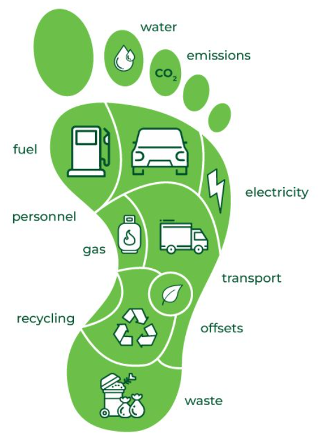
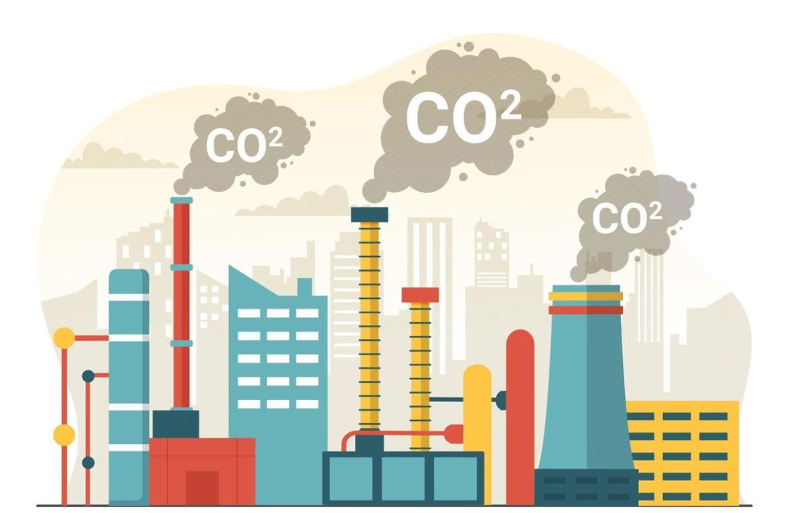
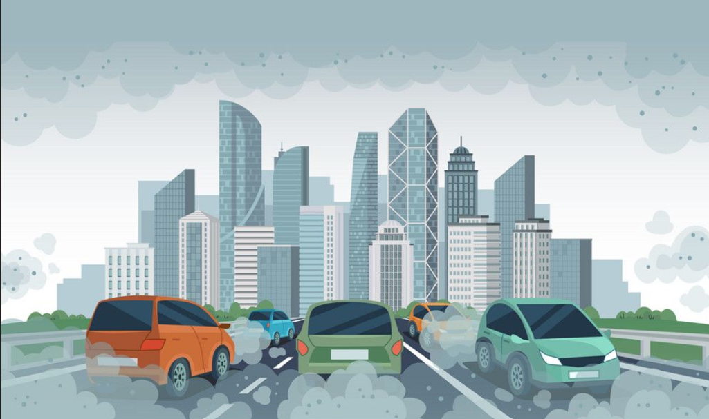
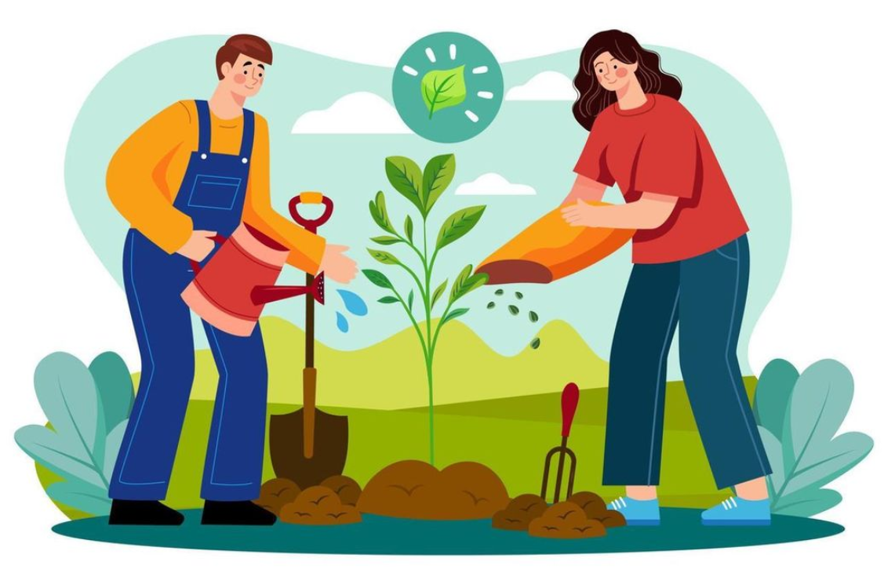
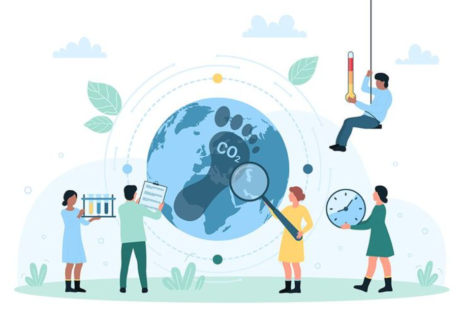

Know Your Impact: Understanding Carbon Footprints
Your carbon footprint is the total amount of greenhouse gases (like CO₂) generated by your actions. It’s time to understand how your daily choices impact the planet.

Factors contributing to your carbon footprint.

CO₂ emissions are a major part of your carbon footprint.

The impact of vehicles on CO₂ emissions.
- Did you know? The average global carbon footprint is about 4 tons per person, but in developed countries, it can be as high as 16 tons!
- Transportation, energy use, and food production are the biggest contributors to individual carbon footprints.
Fun Fact: If everyone reduced their carbon footprint by just 10%, it would be equivalent to taking 100 million cars off the road annually!
"We do not inherit the Earth from our ancestors; we borrow it from our children." – Native American Proverb
Take Action: Use a carbon footprint calculator to measure your impact.
Live Lightly: Everyday Actions for a Smaller Footprint
Small changes in your daily life can add up to a big difference. Here’s how you can start:
- At Home: Switch to LED bulbs, unplug devices when not in use, and opt for renewable energy sources like solar panels.
- On the Move: Walk, bike, or use public transport. If you drive, consider an electric or hybrid vehicle.
- On Your Plate: Eat more plant-based meals. Did you know that 14.5% of global greenhouse gas emissions come from livestock farming?
Did You Know? If every American skipped meat and cheese just one day a week, it would be like taking 7.6 million cars off the road!
"The greatest threat to our planet is the belief that someone else will save it." – Robert Swan
Think Bigger: Beyond Personal Choices
While individual actions matter, collective efforts can drive systemic change. Here’s how you can make a bigger impact:

Join campaigns for systemic change.
- Waste Not: Reduce, reuse, and recycle. Composting organic waste can cut landfill emissions by 30%.
- Advocate for Change: Support policies that promote renewable energy, sustainable transportation, and climate action.
- Spread the Word: Share your journey on social media and inspire others to join the movement.
Fact: Recycling one ton of paper saves 17 trees and 7,000 gallons of water!
"Alone we can do so little; together we can do so much." – Helen Keller
Track and Celebrate: Your Journey to a Greener Future
Reducing your carbon footprint is a journey, not a destination. Celebrate your progress and keep going!

Track your progress toward a greener future.
- Set achievable goals, like reducing energy use by 10% in the next year.
- Use apps or journals to track your progress and stay motivated.
- Share your achievements with friends and family to inspire them.
Did You Know? If every household in the U.S. replaced one incandescent bulb with an LED, it would prevent 9 billion pounds of greenhouse gas emissions annually!
"Progress is impossible without change." – George Bernard Shaw
Start Today: Take One Step Toward a Lighter Footprint!
Ready to make a difference? Begin your journey now and inspire others to join you.
Calculate Your Carbon Footprint